Module Image.Color
- Description
-
This module keeps names and easy handling for easy color support. It gives you an easy way to get colors from names.
A color is here an object, containing color information and methods for conversion, see below.
Image.Color can be called to make a color object. Image.Color() takes the following arguments:
Image.Color(string name) // "red" Image.Color(string prefix_string) // "lightblue" Image.Color(string hex_name) // "#ff00ff" Image.Color(string cmyk_string) // "%17,42,0,19.4" Image.Color(string hsv_string) // "%@327,90,32" Image.Color(int red, int green, int blue)The color names available can be listed by using indices on Image.Color. The colors are available by name directly as Image.Color.name, too:
...Image.Color.red... ...Image.Color.green... or, maybe import Image.Color; ...red... ...green... ...lightgreen...Giving red, green and blue values is equal to calling Image.Color.rgb().
The prefix_string method is a form for getting modified colors, it understands all modifiers (
light,dark,bright,dullandneon). Simply use "method"+"color"; (as in lightgreen, dullmagenta, lightdullorange).The hex_name form is a simple #rrggbb form, as in HTML or X-program argument. A shorter form (#rgb) is also accepted. This is the inverse to the Image.Color.Color->hex() method.
The cmyk_string is a string form of giving cmyk (cyan, magenta, yellow, black) color. These values are floats representing percent.
The hsv_string is another hue, saturation, value representation, but in floats; hue is in degree range (0..360), and saturation and value is given in percent. This is not the same as returned or given to the hsv() methods!
This table lists all the different named colors available in Image.Color. The first column shows the actual color while the five following columns demonstrates the modifiers neon, light, dark, bright and dull. The color begind the name of the color is produced by calling neon()->dark()->dark()->dark() from the color object itself, i.e. Image.Color.mintcream->neon()->dark()->dark()->dark().
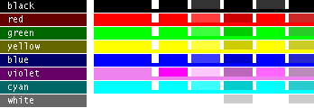
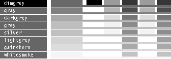
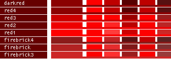
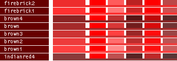
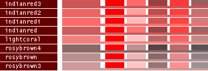
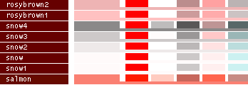
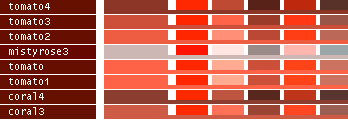
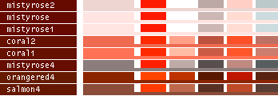
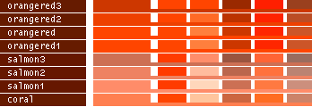
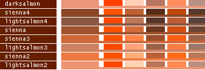
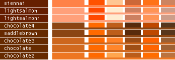
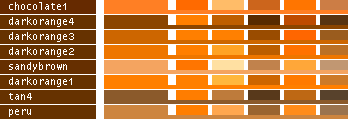
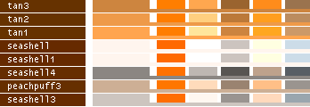
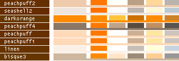
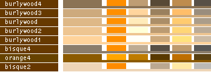
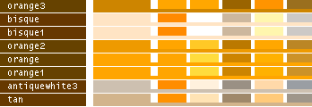
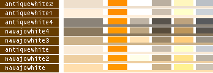
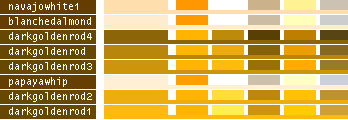
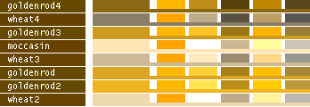

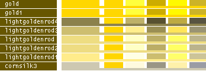

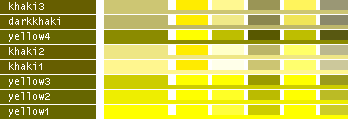
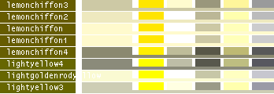
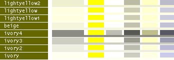
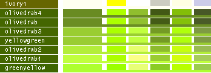
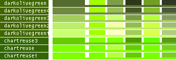
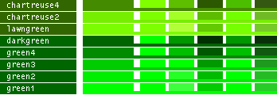
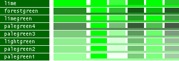
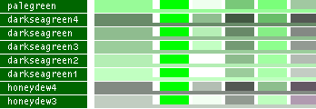
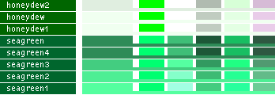
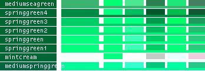
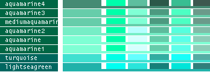
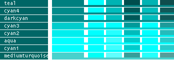
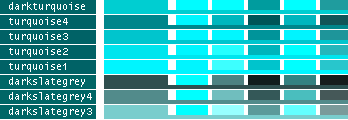
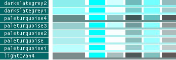
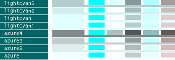

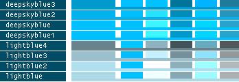
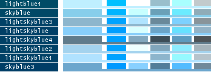
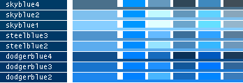
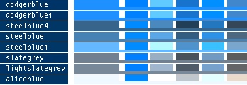
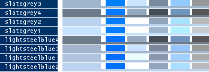
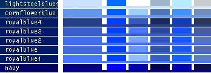
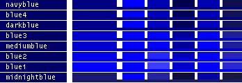
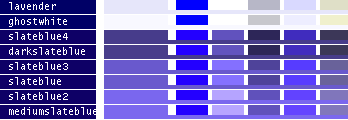
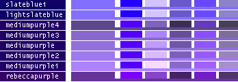
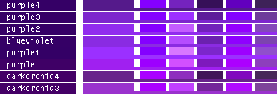
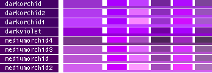
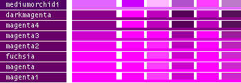
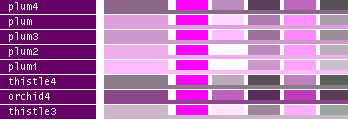
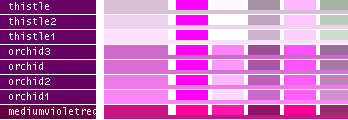
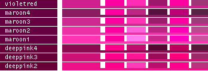

- Note
-
Image.Color["something"] will never(!) generate an error, but a zero_type 0, if the color is unknown. This is enough to give the error "not present in module", if used as Image.Color.something, though.
If you are using colors from for instance a webpage, you might want to create the color from Image.Color.guess(), since that method is more tolerant for mistakes and errors.
Image.Color() is case- and space-sensitive. Use Image.Color.guess() to catch all variants.
and subtract with a space (lower_case(x)-" ") to make sure you get all variants.
- See also
-
Image.Color.Color->name, Image.Color.Color->rgb,
colors, Image.Color.Color, Image.Color.guess, Image, Image.Colortable